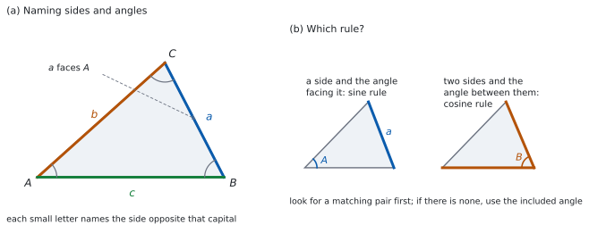

SL 3.2 — Right-angled trigonometry and the sine and cosine rules（三角比・正弦定理・余弦定理）
- 直角三角形で sine（正弦）・cosine（余弦）・tangent（正接）を使い、辺と角を求められる。
- 辺と角の名前のつけ方（\(a\) は \(A\) の向かい）が分かる。
- sine rule（正弦定理）と cosine rule（余弦定理）を、場面に応じて使い分けられる。
- 三角形の面積を \(\dfrac{1}{2}ab\sin C\) で求められる。
- 問題文から、ラベルを付けた図をかける。
The idea
1. 直角三角形の三角比
直角三角形で、ある角 \(\theta\) から見て
- hypotenuse（斜辺）… 直角の向かいの、いちばん長い辺
- opposite（対辺）… \(\theta\) の向かいの辺
- adjacent（隣辺）… \(\theta\) をはさむ、斜辺でないほうの辺
と呼びます。\(3\) つの比は
\[ \sin\theta = \frac{\text{opp}}{\text{hyp}}, \qquad \cos\theta = \frac{\text{adj}}{\text{hyp}}, \qquad \tan\theta = \frac{\text{opp}}{\text{adj}} \tag{1}\]
SOH-CAH-TOA と覚える人が多い形です。この \(3\) つは、直角三角形でしか使えません。
このページで使う正確な値だけ、先に載せておきます（くわしくは SL 3.5 で扱います）。
| \(\theta\) | \(30°\) | \(45°\) | \(60°\) |
|---|---|---|---|
| \(\sin\theta\) | \(\dfrac{1}{2}\) | \(\dfrac{\sqrt{2}}{2}\) | \(\dfrac{\sqrt{3}}{2}\) |
| \(\cos\theta\) | \(\dfrac{\sqrt{3}}{2}\) | \(\dfrac{\sqrt{2}}{2}\) | \(\dfrac{1}{2}\) |
| \(\tan\theta\) | \(\dfrac{\sqrt{3}}{3}\) | \(1\) | \(\sqrt{3}\) |
\(120°\) については \(\sin 120° = \dfrac{\sqrt{3}}{2}\)、\(\cos 120° = -\dfrac{1}{2}\) を、直角については \(\sin 90° = 1\)、\(\cos 90° = 0\) を使います。
この表は公式集にはありません。 Paper 1 は電卓なしなので、覚える必要があります。
2. 角を求める
辺の長さから角を出すときは、逆の関数を使います（SL 2.2）。
\[ \sin\theta = k \ \Rightarrow \ \theta = \sin^{-1}k \tag{2}\]
\(\sin^{-1}\) は arcsin とも書きます。\(\dfrac{1}{\sin}\) ではありません。
\(\sin^{-1}\) は逆関数の記号です。\(\dfrac{1}{\sin x}\) とはまったく別のものです。
答案では、迷ったら arcsin と書いてもかまいません。
3. 辺と角の名前
三角形 \(ABC\) では、小文字の辺は、同じ文字の角の向かいにあります。
- \(a\) は \(\hat{A}\) の向かい（つまり \(BC\)）
- \(b\) は \(\hat{B}\) の向かい（つまり \(CA\)）
- \(c\) は \(\hat{C}\) の向かい（つまり \(AB\)）
図 1 の (a) がその決まりです。この約束を先に確かめてから、定理に代入してください。
4. 正弦定理
\[ \frac{a}{\sin A} = \frac{b}{\sin B} = \frac{c}{\sin C} \tag{3}\]
公式集の 3.2 の欄に Sine rule として印刷されています。
\(\dfrac{a}{\sin A} = \dfrac{b}{\sin B} = \dfrac{c}{\sin C}\)
逆数の形 \(\dfrac{\sin A}{a} = \dfrac{\sin B}{b} = \dfrac{\sin C}{c}\) も同じ式です。角を求めるときは、こちらが便利です。
「向かい合う組」が \(1\) つそろっていれば使えます。 たとえば \(\hat{A}\) と \(a\) が分かっていて、\(\hat{B}\) も分かっているなら \(b\) が出ます。
\(\hat{A} = 30°\)、\(\hat{C} = 45°\)、\(c = 4\) なら
\[ \frac{a}{\sin 30°} = \frac{4}{\sin 45°} \ \Rightarrow \ a = \frac{4 \times \frac{1}{2}}{\frac{\sqrt{2}}{2}} = \frac{2}{\frac{\sqrt{2}}{2}} = \frac{4}{\sqrt{2}} = 2\sqrt{2} \]
\(\dfrac{a}{\sin B}\) のように、ちがう文字を組にしてはいけません（第 3 節）。
代入する前に、その辺がどの角の向かいかを図で確かめてください。
なお、SL 3.2 では ambiguous case（あいまいな場合）は扱いません。 \(2\) 辺とその一方の向かいの角から \(2\) 通りの三角形ができる場合のことで、SL 3.5 で扱います。
5. 余弦定理
\[ c^{2} = a^{2} + b^{2} - 2ab\cos C \tag{4}\]
\[ \cos C = \frac{a^{2}+b^{2}-c^{2}}{2ab} \tag{5}\]
公式集の 3.2 の欄に Cosine rule として印刷されています。
\(c^2 = a^2 + b^2 - 2ab\cos C\) ; \(\cos C = \dfrac{a^2+b^2-c^2}{2ab}\)
\(2\) とおりの形が、どちらも印刷されています。 上は辺を求めるとき、下は角を求めるときに使います。
\(C\) は、\(a\) と \(b\) が「はさむ」角です。\(c\) はその向かいです。
\(a = 3\)、\(b = 5\)、\(\hat{C} = 60°\) なら
\[ c^{2} = 9 + 25 - 2(3)(5)\left(\frac{1}{2}\right) = 34 - 15 = 19 \]
なので \(c = \sqrt{19}\) です。
\(\hat{C}\) が \(90°\) より大きい（鈍角）と \(\cos C < 0\) なので、\(-2ab\cos C\) は足し算になります。
\(\cos 120° = -\dfrac{1}{2}\) です。符号を落とすと、答えが小さくなりすぎます。
6. どちらを使うか
図 1 の (b) が、その見分け方です。
| 分かっているもの | 使うもの |
|---|---|
| 直角三角形で、辺 \(2\) つ、または辺 \(1\) つと角 \(1\) つ | 三角比（第 1 節） |
| 辺とその向かいの角の組が \(1\) つそろっている | 正弦定理 |
| \(2\) 辺と、そのはさむ角 | 余弦定理（辺を求める形） |
| \(3\) 辺すべて | 余弦定理（角を求める形） |
まず「向かい合う組」があるかを見ます。 なければ余弦定理です。
7. 三角形の面積と、図をかくこと
\[ A = \frac{1}{2}ab\sin C \tag{6}\]
公式集の 3.2 の欄に Area of a triangle として印刷されています。
\(A = \dfrac{1}{2}ab\sin C\)
\(C\) は、\(a\) と \(b\) がはさむ角です。余弦定理と同じ組み合わせです。
\(a = 4\)、\(b = 6\)、\(\hat{C} = 30°\) なら \(A = \dfrac{1}{2}(4)(6)\left(\dfrac{1}{2}\right) = 6\) です。
シラバスは、この項目について次のように述べています。
In all areas of this topic, students should be encouraged to sketch well-labelled diagrams to support their solutions.
つまり、文章で与えられた問題は、まず図にするということです。図には
- 頂点の名前（\(A\)、\(B\)、\(C\) など）
- 分かっている長さ
- 分かっている角
- 求めたいもの（\(x\) などの文字）
を書き入れます。図があると、どの定理を使うかがその場で見えます。
TI-Nspire の Calculator 画面で、\(\sin\)・\(\cos\)・\(\tan\) と、その逆の \(\sin^{-1}\) などが使えます。ハンドヘルドでは trig キーでパレットが開きますが、sin( のように直接打ち込んでもかまいません。
角の単位を、問題文に合わせてください。 doc → Settings → Document Settings の Angle が Degree か Radian かで、答えが変わります。三角形の問題は度で与えられることが多いですが、問題文を見て決めます。
途中の値を丸めないでください。 \(\cos C\) を小数にしてから角を出すと、最後の答えがずれます。電卓の中に値を持たせたまま次に進みます。
Paper 1 では使えません。 このページの例題と演習は、すべて手で解ける形にしてあります。

Why it works
なぜ、正弦定理が成り立つのでしょうか。
三角形 \(ABC\) で、\(C\) から辺 \(AB\) に垂線を下ろし、その足を \(H\)、長さを \(h\) とします。すると直角三角形が \(2\) つできます。
- 三角形 \(ACH\) で、\(\sin A = \dfrac{h}{b}\)、つまり \(h = b\sin A\)
- 三角形 \(BCH\) で、\(\sin B = \dfrac{h}{a}\)、つまり \(h = a\sin B\)
ここでは \(H\) が \(A\) と \(B\) のあいだにある図で考えました。\(\hat{A}\) が鈍角だと \(H\) は \(A\) の外側に出て、直角三角形 \(ACH\) の \(A\) のところの角は \(\hat{A}\) ではなく \(180° - \hat{A}\) になります。それでも \(\sin(180° - \hat{A}) = \sin \hat{A}\)（SL 3.5 で扱います）なので、\(h = b\sin A\) はそのままの形で成り立ちます。\(\hat{B}\) が鈍角のときも同じです。
同じ \(h\) を \(2\) とおりに書いたので
\[ b\sin A = a\sin B \ \Rightarrow \ \frac{a}{\sin A} = \frac{b}{\sin B} \]
になります。\(A\) から \(BC\) に垂線を下ろせば、同じやり方で \(\dfrac{b}{\sin B} = \dfrac{c}{\sin C}\) が出ます。
なぜ、三角形の面積が \(\dfrac{1}{2}ab\sin C\) なのでしょうか。 三角形の面積は \(\dfrac{1}{2} \times (\text{底辺}) \times (\text{高さ})\) でした。底辺を \(a\)（つまり \(BC\)）とすると、高さは \(A\) から直線 \(BC\) に下ろした垂線の長さ \(h\) です。その足を \(K\) とすると、直角三角形 \(ACK\) の斜辺は \(b\)（\(= CA\)）で、\(C\) のところの角は \(\hat{C}\) ですから、\(h = b\sin C\) です。（\(\hat{C}\) が鈍角のときは \(K\) が \(BC\) の外に出て、\(C\) のところの角は \(180° - \hat{C}\) になりますが、\(\sin(180° - \hat{C}) = \sin \hat{C}\) なので同じ式です。）
だから
\[ \text{面積} = \frac{1}{2} \times a \times b\sin C = \frac{1}{2}ab\sin C \]
です。「はさむ角」でなければならないのは、この高さの作り方から来ています。
なぜ、余弦定理が成り立つのでしょうか。 \(C\) から \(AB\) に垂線を下ろし、足を \(H\) とします。\(AH = b\cos A\)、\(CH = b\sin A\) です。すると \(HB = c - b\cos A\) で、直角三角形 \(CHB\) にピタゴラスの定理を使うと
\[ a^{2} = (b\sin A)^{2} + (c - b\cos A)^{2} \]
展開すると
\[ a^{2} = b^{2}\sin^{2}A + c^{2} - 2bc\cos A + b^{2}\cos^{2}A \]
で、\(\sin^{2}A + \cos^{2}A = 1\)（SL 3.6 で扱います）を使うと \(b^{2}\) にまとまり
\[ a^{2} = b^{2} + c^{2} - 2bc\cos A \]
になります。文字を入れかえれば、公式集の形と同じです。
この図では、垂線の足 \(H\) が \(A\) と \(B\) のあいだにあるとしました。\(\hat{A}\) が鈍角だと \(H\) は \(A\) の外側に出ます。このとき直角三角形 \(ACH\) の \(A\) のところの角は \(180° - \hat{A}\) なので、\(CH = b\sin(180° - A) = b\sin A\)、\(AH = b\cos(180° - A) = -b\cos A\)（\(\cos A < 0\) なので、これは正の長さです）となり、\(HB = AH + AB = c - b\cos A\) です。式はそのままの形で成り立ちます。 \(\hat{B}\) が鈍角で \(H\) が \(B\) の外側に出るときは \(HB\) の長さが \(b\cos A - c\) になりますが、\(2\) 乗するので結果は変わりません。
なぜ、\(\hat{C} = 90°\) のときピタゴラスの定理に戻るのでしょうか。 \(\cos 90° = 0\) なので \(-2ab\cos C = 0\) となり、\(c^{2} = a^{2}+b^{2}\) が残ります。余弦定理は、ピタゴラスの定理を鈍角・鋭角にも広げたものだと言えます。
Worked examples
問題文は英語です。意味が理解できなかったら、問題文の下の「日本語訳」を開いてください。解説は日本語です。
例題も演習も、すべて電卓なしで解けます。 Paper 1 のつもりで解いてください。
例題 1 In triangle \(ABC\), the angle at \(B\) is a right angle, \(AB = 8\) cm and \(BC = 15\) cm.
(a) Find the length of \(AC\).
(b) Write down the value of \(\sin \hat{A}\).
(c) Write down the value of \(\tan \hat{C}\).
(d) Explain why \(\sin \hat{A} = \cos \hat{C}\) in this triangle.
日本語訳
三角形 \(ABC\) で、\(B\) の角が直角、\(AB = 8\) cm、\(BC = 15\) cm です。
(a) \(AC\) の長さを求めなさい。
(b) \(\sin \hat{A}\) の値を書きなさい。
(c) \(\tan \hat{C}\) の値を書きなさい。
(d) この三角形で \(\sin \hat{A} = \cos \hat{C}\) となる理由を説明しなさい。
(a) \(AC\) が斜辺です。ピタゴラスの定理を使います。
\[ AC = \sqrt{8^{2}+15^{2}} = \sqrt{64+225} = \sqrt{289} = 17 \]
(b) \(\hat{A}\) から見て、\(BC\) が対辺、\(AC\) が斜辺です（式 1）。
\[ \sin \hat{A} = \frac{15}{17} \]
(c) \(\hat{C}\) から見て、\(AB\) が対辺、\(BC\) が隣辺です。
\[ \tan \hat{C} = \frac{8}{15} \]
(d) Explain why なので、英語で理由を書きます。
試験ではこう書く
The angles of a triangle add to \(180°\), and \(\hat{B} = 90°\), so \(\hat{A} + \hat{C} = 90°\). The side opposite \(\hat{A}\) is \(BC\), and \(BC\) is also the side adjacent to \(\hat{C}\). Both ratios are therefore \(\dfrac{BC}{AC}\): \(\sin \hat{A} = \dfrac{\text{opp}}{\text{hyp}}\) and \(\cos \hat{C} = \dfrac{\text{adj}}{\text{hyp}}\) use the same two lengths.
（三角形の角の和は \(180°\) で \(\hat{B} = 90°\) なので、\(\hat{A}+\hat{C} = 90°\) である。\(\hat{A}\) の対辺は \(BC\) で、その \(BC\) は \(\hat{C}\) の隣辺でもある。したがってどちらの比も \(\dfrac{BC}{AC}\) になる。\(\sin \hat{A} = \dfrac{\text{opp}}{\text{hyp}}\) と \(\cos \hat{C} = \dfrac{\text{adj}}{\text{hyp}}\) は、同じ \(2\) 辺を使っているのである、という意味です。）
検算（(a) について）。 \(2\) 乗の差で見ます。 \(17^{2}-15^{2} = (17-15)(17+15) = 2 \times 32 = 64 = 8^{2}\) ✓ 足し算ではなく、かけ算で確かめました。
検算（(b) について）。 \(\sin^{2}+\cos^{2}\) で見ます。 \(\cos \hat{A} = \dfrac{8}{17}\) なので \(\left(\dfrac{15}{17}\right)^{2} + \left(\dfrac{8}{17}\right)^{2} = \dfrac{225+64}{289} = 1\) ✓
検算（(c) について）。 \(\hat{A}\) の比と見くらべます。 \(\tan \hat{A} = \dfrac{15}{8}\) で、\(\tan \hat{C} = \dfrac{8}{15}\) はその逆数です ✓ \(\hat{A}+\hat{C} = 90°\) のとき、こうなります。
(a) \(AC = \sqrt{64+225}\) \[AC = 17 \text{ cm}\]
(b) \[\sin \hat{A} = \frac{15}{17}\]
(c) \[\tan \hat{C} = \frac{8}{15}\]
(d) \(\hat{A}+\hat{C} = 90°\), and \(BC\) is opposite \(\hat{A}\) but adjacent to \(\hat{C}\), so both ratios equal \(\dfrac{BC}{AC}\).
例題 2 In triangle \(ABC\), \(\hat{A} = 30°\), \(\hat{B} = 45°\) and \(a = 8\) cm.
(a) Find \(\hat{C}\).
(b) Find the exact value of \(b\).
(c) Explain why \(b > a\).
(d) A student writes \(\dfrac{a}{\sin B} = \dfrac{b}{\sin A}\). Identify the error, and write down the correct statement.
日本語訳
三角形 \(ABC\) で、\(\hat{A} = 30°\)、\(\hat{B} = 45°\)、\(a = 8\) cm です。
(a) \(\hat{C}\) を求めなさい。
(b) \(b\) を求めなさい。答えは正確な値で書きなさい。
(c) \(b > a\) となる理由を説明しなさい。
(d) ある生徒が \(\dfrac{a}{\sin B} = \dfrac{b}{\sin A}\) と書きました。誤りを指摘し、正しい式を書きなさい。
(a) 角の和は \(180°\) です。
\[ \hat{C} = 180° - 30° - 45° = 105° \]
(b) \(a\) と \(\hat{A}\) の組がそろっているので、正弦定理です（式 3）。
\[ \frac{8}{\sin 30°} = \frac{b}{\sin 45°} \ \Rightarrow \ b = \frac{8 \sin 45°}{\sin 30°} = \frac{8 \times \frac{\sqrt{2}}{2}}{\frac{1}{2}} \]
\[ b = 8\sqrt{2} \]
(c) Explain why なので、英語で理由を書きます。
試験ではこう書く
By the sine rule \(\dfrac{a}{\sin A} = \dfrac{b}{\sin B}\), so \(b = a \cdot \dfrac{\sin B}{\sin A}\). Here \(\hat{A} = 30°\) and \(\hat{B} = 45°\) are both acute, and the sine function is increasing between \(0°\) and \(90°\), so \(\sin B > \sin A\). The factor \(\dfrac{\sin B}{\sin A}\) is therefore greater than \(1\), and so \(b > a\).
（正弦定理から \(\dfrac{a}{\sin A} = \dfrac{b}{\sin B}\) なので \(b = a \cdot \dfrac{\sin B}{\sin A}\) である。ここで \(\hat{A} = 30°\) と \(\hat{B} = 45°\) はどちらも鋭角で、\(0°\) から \(90°\) のあいだで正弦は増加するので \(\sin B > \sin A\) である。よってかける数 \(\dfrac{\sin B}{\sin A}\) は \(1\) より大きく、\(b > a\) である。という意味です。なお「長い辺は大きい角に向かい合う」はどの三角形でも成り立ちますが、鈍角がある三角形では \(0°\) から \(90°\) の増加だけでは説明できません。一般の場合は SL 3.5 の \(\sin(180° - \theta) = \sin\theta\) を使います。）
(d) Identify the error なので、英語でどこが違うかを書いてから、正しい式を書きます。
試験ではこう書く
In the sine rule each side must be paired with the angle opposite it, not with another angle. The side \(a\) faces \(\hat{A}\) and the side \(b\) faces \(\hat{B}\), so the student has swapped the two angles. The correct statement is \(\dfrac{a}{\sin A} = \dfrac{b}{\sin B}\).
（正弦定理では、それぞれの辺をその向かいの角と組にしなければならず、別の角と組にしてはいけない。辺 \(a\) は \(\hat{A}\) の向かい、辺 \(b\) は \(\hat{B}\) の向かいなので、この生徒は \(2\) つの角を入れかえている。正しい式は \(\dfrac{a}{\sin A} = \dfrac{b}{\sin B}\) である、という意味です。）
検算（(a) について）。 足して \(180°\) になるかを見ます。 \(30+45+105 = 180\) ✓
検算（(b) について）。 正弦定理に戻して、両辺の値を出します。 \(\dfrac{a}{\sin A} = \dfrac{8}{\frac{1}{2}} = 16\)、\(\dfrac{b}{\sin B} = \dfrac{8\sqrt{2}}{\frac{\sqrt{2}}{2}} = \dfrac{16\sqrt{2}}{\sqrt{2}} = 16\) ✓ \(2\) つが一致しました。
検算（(c) について）。 辺と角の並びで見ます。 角は \(30° < 45° < 105°\)、辺は \(a = 8 < b = 8\sqrt{2} < c\) です ✓ 小さい角には短い辺が向かい合っています。
(a) \[\hat{C} = 105°\]
(b) \(\dfrac{8}{\sin 30°} = \dfrac{b}{\sin 45°}\) \[b = 8\sqrt{2} \text{ cm}\]
(c) \(\hat{A}\) and \(\hat{B}\) are both acute with \(\hat{B} > \hat{A}\), and sine is increasing on \(0°\) to \(90°\), so \(\sin B > \sin A\) and \(b = a\cdot\dfrac{\sin B}{\sin A} > a\).
(d) Each side pairs with the angle opposite it. \[\frac{a}{\sin A} = \frac{b}{\sin B}\]
例題 3 In triangle \(ABC\), \(a = 5\) cm, \(b = 8\) cm and \(\hat{C} = 60°\).
(a) Find \(c\).
(b) Find the area of the triangle, giving your answer in exact form.
(c) Find the value of \(\cos \hat{A}\).
(d) Explain why the sine rule cannot be used to find \(c\) from the information given.
日本語訳
三角形 \(ABC\) で、\(a = 5\) cm、\(b = 8\) cm、\(\hat{C} = 60°\) です。
(a) \(c\) を求めなさい。
(b) この三角形の面積を求めなさい。答えは正確な値で書きなさい。
(c) \(\cos \hat{A}\) の値を求めなさい。
(d) 与えられた情報から \(c\) を求めるのに正弦定理が使えない理由を説明しなさい。
(a) \(\hat{C}\) が \(a\) と \(b\) のはさむ角なので、余弦定理です（式 4）。
\[ c^{2} = 5^{2}+8^{2} - 2(5)(8)\cos 60° = 25 + 64 - 80\left(\frac{1}{2}\right) = 89 - 40 = 49 \]
\[ c = 7 \]
(b) 同じ \(2\) 辺とはさむ角で、面積が出ます（式 6）。
\[ A = \frac{1}{2}(5)(8)\sin 60° = 20 \times \frac{\sqrt{3}}{2} = 10\sqrt{3} \]
(c) \(3\) 辺がそろったので、角を求める形を使います（式 5）。文字を \(A\) に合わせると、はさむ \(2\) 辺は \(b\) と \(c\) です。
\[ \cos \hat{A} = \frac{b^{2}+c^{2}-a^{2}}{2bc} = \frac{64+49-25}{2(8)(7)} = \frac{88}{112} = \frac{11}{14} \]
(d) Explain why なので、英語で理由を書きます。
試験ではこう書く
The sine rule needs a side together with the angle facing it. Here the known angle is \(\hat{C}\), but the side \(c\) facing it is exactly what we are asked to find, and neither \(\hat{A}\) nor \(\hat{B}\) is known. So no complete pair is available and the sine rule cannot be started. The cosine rule is the right tool, because it uses two sides and the angle between them.
（正弦定理には、辺とその向かいの角の組が要る。ここで分かっている角は \(\hat{C}\) だが、その向かいの辺 \(c\) こそが求めたいものであり、\(\hat{A}\) も \(\hat{B}\) も分かっていない。よって完全な組がそろわず、正弦定理は始められない。\(2\) 辺とそのはさむ角を使う余弦定理が、正しい道具である、という意味です。）
検算（(a) について）。 辺の大小で見ます。 \(\hat{A}+\hat{B} = 180°-60° = 120°\) なので、\(\hat{A}\) と \(\hat{B}\) の一方は \(60°\) より小さく、他方は \(60°\) より大きくなります。\(a = 5 < b = 8\) だから \(\hat{A} < \hat{B}\) で、\(\hat{A} < 60° < \hat{B}\) です。したがって \(c\) は \(a = 5\) と \(b = 8\) のあいだに来るはずです。\(c = 7\) ✓ 余弦定理の計算とは別の道すじで、大小の並びが合っています。
検算（(b) について）。 別の \(2\) 辺と、そのはさむ角で出し直します。 (c) から \(\cos \hat{A} = \dfrac{11}{14}\)、\(\sin \hat{A} = \dfrac{5\sqrt{3}}{14}\) です。\(b\) と \(c\) がはさむ角は \(\hat{A}\) なので、面積は \(\dfrac{1}{2}bc\sin A = \dfrac{1}{2}(8)(7) \times \dfrac{5\sqrt{3}}{14} = 28 \times \dfrac{5\sqrt{3}}{14} = 10\sqrt{3}\) ✓ ちがう \(2\) 辺・ちがう角を使って、同じ値になりました。
検算（(c) について）。 正弦定理でつじつまを見ます。 \(\cos \hat{A} = \dfrac{11}{14}\) なら \(\sin \hat{A} = \dfrac{\sqrt{196-121}}{14} = \dfrac{5\sqrt{3}}{14}\) です。すると \(\dfrac{a}{\sin A} = \dfrac{5}{\frac{5\sqrt{3}}{14}} = \dfrac{14}{\sqrt{3}}\)、\(\dfrac{c}{\sin C} = \dfrac{7}{\frac{\sqrt{3}}{2}} = \dfrac{14}{\sqrt{3}}\) ✓ \(2\) つが一致しました。
(a) \(c^{2} = 25+64-2(5)(8)\cos 60° = 49\) \[c = 7 \text{ cm}\]
(b) \(A = \dfrac{1}{2}(5)(8)\sin 60°\) \[A = 10\sqrt{3} \text{ cm}^{2}\]
(c) \(\cos \hat{A} = \dfrac{64+49-25}{2(8)(7)}\) \[\cos \hat{A} = \frac{11}{14}\]
(d) The only known angle is \(\hat{C}\), and the side facing it is the unknown, so there is no complete side–angle pair.
例題 4 A triangular flower bed \(ABC\) has \(AB = 7\) m, \(BC = 3\) m and \(A\hat{B}C = 120°\).
(a) Find the exact value of \(AC\).
(b) Find the area of the flower bed, giving your answer in exact form.
(c) A student calculates the area as \(\dfrac{1}{2}(7)(AC)\sin 120°\). Comment on this.
(d) Explain why \(AC\) is longer than both \(AB\) and \(BC\).
日本語訳
三角形の花壇 \(ABC\) で、\(AB = 7\) m、\(BC = 3\) m、\(A\hat{B}C = 120°\) です。
(a) \(AC\) を求めなさい。答えは正確な値で書きなさい。
(b) この花壇の面積を求めなさい。答えは正確な値で書きなさい。
(c) ある生徒が、面積を \(\dfrac{1}{2}(7)(AC)\sin 120°\) として計算しました。これについて述べなさい。
(d) \(AC\) が \(AB\) よりも \(BC\) よりも長い理由を説明しなさい。
(a) まず図をかきます（第 7 節）。\(\hat{B}\) が \(AB\) と \(BC\) のはさむ角なので、余弦定理です。
\[ AC^{2} = 7^{2}+3^{2} - 2(7)(3)\cos 120° = 49 + 9 - 42\left(-\frac{1}{2}\right) = 58 + 21 = 79 \]
\[ AC = \sqrt{79} \]
(b) はさむ角がそのまま使えます（式 6）。
\[ A = \frac{1}{2}(7)(3)\sin 120° = \frac{21}{2} \times \frac{\sqrt{3}}{2} = \frac{21\sqrt{3}}{4} \]
(c) Comment on なので、英語で判断とその理由を書きます。
試験ではこう書く
This is not correct. The formula \(\dfrac{1}{2}ab\sin C\) needs the angle between the two sides used. The angle \(120°\) lies between \(AB\) and \(BC\), not between \(AB\) and \(AC\), so it cannot be paired with \(AB\) and \(AC\). Using \(AB\) and \(BC\) with \(120°\) gives the correct area. The student’s expression would need the angle \(B\hat{A}C\) instead.
（これは正しくない。公式 \(\dfrac{1}{2}ab\sin C\) には、使う \(2\) 辺のあいだの角が要る。\(120°\) は \(AB\) と \(BC\) のあいだの角であって、\(AB\) と \(AC\) のあいだの角ではないので、\(AB\) と \(AC\) に組み合わせることはできない。\(AB\) と \(BC\) に \(120°\) を使えば正しい面積が出る。この生徒の式には、かわりに \(B\hat{A}C\) が必要である、という意味です。）
(d) Explain why なので、英語で理由を書きます。
試験ではこう書く
The angles of a triangle add to \(180°\), so with \(\hat{B} = 120°\) the other two angles add to \(60°\) and each is less than \(120°\). Hence \(\hat{B}\) is the largest angle. In any triangle the largest angle faces the longest side, and the side facing \(\hat{B}\) is \(AC\). So \(AC\) is the longest side.
（三角形の角の和は \(180°\) なので、\(\hat{B} = 120°\) のとき残りの \(2\) 角の和は \(60°\) で、どちらも \(120°\) より小さい。よって \(\hat{B}\) がいちばん大きい角である。どの三角形でもいちばん大きい角にいちばん長い辺が向かい合い、\(\hat{B}\) の向かいの辺は \(AC\) である。よって \(AC\) がいちばん長い、という意味です。）
検算（(a) について）。 鈍角のはたらきを見ます。 もし \(\hat{B} = 90°\) なら \(AC^{2} = 49+9 = 58\) でした。\(120°\) は鈍角なので、\(AC\) はそれより長いはずです。\(79 > 58\) ✓ 符号を落として \(58 - 21 = 37\) としていないかも、ここで分かります。
検算（(b) について）。 底辺と高さで出し直します。 \(BC = 3\) を底辺とすると、\(A\) から \(BC\) を延ばした直線までの高さは \(7\sin 60° = \dfrac{7\sqrt{3}}{2}\) です（\(180°-120° = 60°\)）。面積は \(\dfrac{1}{2}(3)\left(\dfrac{7\sqrt{3}}{2}\right) = \dfrac{21\sqrt{3}}{4}\) ✓
検算（(c) について）。 数でちがいを見ます。 生徒の式は \(\dfrac{1}{2}(7)\sqrt{79}\left(\dfrac{\sqrt{3}}{2}\right) = \dfrac{7\sqrt{237}}{4}\) です。\(\sqrt{237} > 15\) なので \(26\) より大きく、正しい \(\dfrac{21\sqrt{3}}{4}\)（およそ \(9.1\)）とはまるでちがいます ✓
(a) \(AC^{2} = 49+9-2(7)(3)\cos 120° = 79\) \[AC = \sqrt{79} \text{ m}\]
(b) \(A = \dfrac{1}{2}(7)(3)\sin 120°\) \[A = \frac{21\sqrt{3}}{4} \text{ m}^{2}\]
(c) Not correct: \(\dfrac{1}{2}ab\sin C\) needs the angle between the two sides, and \(120°\) is between \(AB\) and \(BC\), not between \(AB\) and \(AC\).
(d) \(\hat{B} = 120°\) is the largest angle, and the longest side faces the largest angle.
Common errors
\(\sin\theta = \dfrac{\text{opp}}{\text{hyp}}\) は直角三角形だけの関係です（第 1 節）。直角がなければ、正弦定理か余弦定理です。
\(a\) は \(\hat{A}\) と組にします（第 3 節）。図で向かい合わせを確かめてください。
\(c^{2} = a^{2}+b^{2}-2ab\cos C\) の \(\hat{C}\) は、\(a\) と \(b\) のあいだの角です（第 5 節）。
\(\cos 120° = -\dfrac{1}{2}\) です（第 5 節）。マイナスどうしで足し算になります。
\(\dfrac{1}{2}ab\sin C\) の \(\hat{C}\) も、\(a\) と \(b\) のあいだです（第 7 節）。
シラバスが、ラベルを付けた図をかくよう勧めています（第 7 節）。図があると、使う定理がその場で見えます。
Exercises
各問題に、折りたたみが \(3\) つ付いています。日本語訳、解答例（答案用紙に書くべきこと。英語です）、解説（なぜそうなるか。日本語です）。
まず自分で解いて、次に解答例と見くらべてください。解説は、合わなかったときだけ開けば十分です。
1 In a right-angled triangle the hypotenuse is \(13\) cm and one of the other sides is \(5\) cm. Find the length of the third side.
日本語訳
直角三角形の斜辺が \(13\) cm、他の \(1\) 辺が \(5\) cm です。残りの辺の長さを求めなさい。
\[x = \sqrt{13^{2}-5^{2}} = \sqrt{169-25} = \sqrt{144}\]
\[x = 12 \text{ cm}\]
斜辺が \(13\) なので、引き算です。\(5\)-\(12\)-\(13\) はよく出る組です。
検算。 \(2\) 乗の差で見ます。 \(13^{2}-5^{2} = (13-5)(13+5) = 8 \times 18 = 144\) ✓ かけ算で確かめました。
\(\sqrt{169+25}\) としないでください。 斜辺は \(13\) のほうです。
2 In triangle \(PQR\), the angle at \(Q\) is a right angle, \(PQ = 9\) cm and \(QR = 12\) cm. Write down the value of \(\tan \hat{P}\).
日本語訳
三角形 \(PQR\) で、\(Q\) の角が直角、\(PQ = 9\) cm、\(QR = 12\) cm です。\(\tan \hat{P}\) の値を書きなさい。
\[\tan \hat{P} = \frac{12}{9} = \frac{4}{3}\]
\(\hat{P}\) から見て \(QR\) が対辺、\(PQ\) が隣辺です（式 1）。\(\tan\) に斜辺は出てきません。
検算。 \(\hat{R}\) の比と見くらべます。 \(\tan \hat{R} = \dfrac{9}{12} = \dfrac{3}{4}\) で、\(\dfrac{4}{3}\) の逆数です ✓ \(\hat{P}+\hat{R} = 90°\) なので、こうなります。
約分を忘れないでください。 \(\dfrac{12}{9}\) は \(\dfrac{4}{3}\) にできます。
3 In triangle \(ABC\), \(\hat{A} = 30°\), \(\hat{B} = 90°\) and \(a = 6\) cm. Find \(b\).
日本語訳
三角形 \(ABC\) で、\(\hat{A} = 30°\)、\(\hat{B} = 90°\)、\(a = 6\) cm です。\(b\) を求めなさい。
\[\frac{6}{\sin 30°} = \frac{b}{\sin 90°}\]
\[b = 12 \text{ cm}\]
\(a\) と \(\hat{A}\) の組がそろっているので正弦定理です（式 3）。\(\sin 90° = 1\)、\(\sin 30° = \dfrac{1}{2}\) です。
検算。 直角三角形として見ます。 \(\hat{B} = 90°\) なので \(b\) は斜辺です。\(\sin 30° = \dfrac{6}{b}\) から \(b = \dfrac{6}{1/2} = 12\) ✓ 正弦定理を通らない道すじでも同じです。
\(b\) がいちばん長いはずです。 直角がいちばん大きい角だからです。
4 In triangle \(ABC\), \(b = 4\) cm, \(c = 6\) cm and \(\hat{A} = 60°\). Find the exact value of \(a\).
日本語訳
三角形 \(ABC\) で、\(b = 4\) cm、\(c = 6\) cm、\(\hat{A} = 60°\) です。\(a\) を求めなさい。答えは正確な値で書きなさい。
\[a^{2} = 4^{2}+6^{2}-2(4)(6)\cos 60° = 16+36-24 = 28\]
\[a = 2\sqrt{7} \text{ cm}\]
\(\hat{A}\) が \(b\) と \(c\) のはさむ角なので、余弦定理です（式 4）。文字を \(A\) に合わせて \(a^{2} = b^{2}+c^{2}-2bc\cos A\) とします。
検算。 大小で見ます。 \(\hat{A} = 60°\) は \(90°\) より小さいので、\(a\) は「直角のとき」の \(\sqrt{16+36} = \sqrt{52}\) より短いはずです。\(28 < 52\) ✓
\(\sqrt{28}\) のままにしないでください。 \(4\) が外に出せて \(2\sqrt{7}\) です。
5 Find the area of a triangle with sides of length \(6\) cm and \(10\) cm and an included angle of \(30°\).
日本語訳
\(2\) 辺の長さが \(6\) cm と \(10\) cm、そのはさむ角が \(30°\) の三角形の面積を求めなさい。
\[A = \frac{1}{2}(6)(10)\sin 30° = 30 \times \frac{1}{2}\]
\[A = 15 \text{ cm}^{2}\]
included angle は「はさむ角」です。そのまま 式 6 に入れられます。
検算。 底辺と高さで出し直します。 \(10\) を底辺とすると、高さは \(6\sin 30° = 3\) です。\(\dfrac{1}{2}(10)(3) = 15\) ✓
\(30\) としないでください。 \(\dfrac{1}{2}\) と \(\sin 30° = \dfrac{1}{2}\) の \(2\) つがかかります。
6 (a) In triangle \(ABC\), \(a = 7\) cm, \(b = 8\) cm and \(c = 13\) cm. Find the exact value of \(\cos \hat{C}\), and hence find \(\hat{C}\).
(b) In a second triangle, \(a = 7\) cm, \(b = 8\) cm and \(c = 11\) cm. Use your calculator to find \(\hat{C}\), correct to three significant figures. State the angle setting the calculator must be in.
日本語訳
(a) 三角形 \(ABC\) で、\(a = 7\) cm、\(b = 8\) cm、\(c = 13\) cm です。\(\cos \hat{C}\) の正確な値を求め、それをもとに \(\hat{C}\) を求めなさい。
(b) 別の三角形で、\(a = 7\) cm、\(b = 8\) cm、\(c = 11\) cm です。電卓を使って \(\hat{C}\) を有効数字 \(3\) 桁で求めなさい。電卓をどの角度の設定にしておく必要があるかも書きなさい。
(a)
\[\cos \hat{C} = \frac{7^{2}+8^{2}-13^{2}}{2(7)(8)} = \frac{49+64-169}{112} = \frac{-56}{112} = -\frac{1}{2}\]
\[\hat{C} = 120°\]
(b) calculator in degree mode
\[\cos \hat{C} = \frac{49+64-121}{112} = -\frac{1}{14}, \qquad \hat{C} = 94.1° \quad (3 \text{ s.f.})\]
(a) \(3\) 辺がそろっているので、角を求める形です（式 5）。\(\cos \hat{C} = -\dfrac{1}{2}\) になる角は、\(0° < \hat{C} < 180°\) の中では \(120°\) だけです（SL 3.2 の表）。
負でも、まちがいではありません。 \(c\) がいちばん長いので、\(\hat{C}\) は鈍角です。
(b) \(\cos \hat{C} = -\dfrac{1}{14} = -0.0714\ldots\) で、これは覚えている値ではありません。ここではじめて電卓が要ります。
角度の設定を Degree にしてください。 Radian のままだと \(1.64\ldots\) という別の数が返ります。TI-Nspire では doc → Settings → Document Settings の Angle です（SL 3.3）。
\(\cos^{-1}(-0.0714\ldots) = 94.0965\ldots°\) なので、\(94.1°\) です。途中で丸めず、最後に有効数字 \(3\) 桁にします。
検算（(a)）。 辺に戻します。 \(\cos \hat{C} = -\dfrac{1}{2}\) を \(c^{2} = a^{2}+b^{2}-2ab\cos C\) に入れると \(49+64+56 = 169 = 13^{2}\) ✓ もとの \(c\) に戻りました。
検算（(b)）。 \(c\) を短くしたのだから、角も小さくなるはずです。 \(c = 13\) で \(120°\)、\(c = 11\) で \(94.1°\) ✓ また \(c = 11\) でも \(\cos \hat{C} < 0\) なので、\(\hat{C}\) は \(90°\) より大きいはずです。\(94.1° > 90°\) ✓
検算（三角形になるか）。 \(7 + 8 = 15 > 11\) ✓ \(3\) 辺は三角形をつくれます。
7 In triangle \(ABC\), \(\hat{B} = 45°\), \(\hat{C} = 60°\) and \(b = 10\) cm. Find the exact value of \(c\).
日本語訳
三角形 \(ABC\) で、\(\hat{B} = 45°\)、\(\hat{C} = 60°\)、\(b = 10\) cm です。\(c\) を求めなさい。答えは正確な値で書きなさい。
\[\frac{10}{\sin 45°} = \frac{c}{\sin 60°}\]
\[c = 5\sqrt{6} \text{ cm}\]
\(b\) と \(\hat{B}\) の組がそろっているので正弦定理です（式 3）。\(c = \dfrac{10 \times \frac{\sqrt{3}}{2}}{\frac{\sqrt{2}}{2}} = \dfrac{10\sqrt{3}}{\sqrt{2}}\) を有理化します。
検算。 大小で見ます。 \(\hat{C} = 60° > 45° = \hat{B}\) なので、\(c > b = 10\) のはずです。\(5\sqrt{6} = 5 \times 2.44\ldots\) でおよそ \(12.2\) ✓
\(\dfrac{10\sqrt{3}}{\sqrt{2}}\) のままにしないでください。 分母を有理化して \(5\sqrt{6}\) にします。
8 In triangle \(ABC\), \(a = 4\) cm and \(b = 7\) cm, and the angle \(\hat{C}\) can vary. Explain why the area of the triangle can never be greater than \(14\) cm\(^{2}\), and write down the value of \(\hat{C}\) for which the area is greatest.
日本語訳
三角形 \(ABC\) で、\(a = 4\) cm、\(b = 7\) cm であり、角 \(\hat{C}\) は変わりうるものとします。この三角形の面積が \(14\) cm\(^{2}\) より大きくなることはない理由を説明し、面積が最大になる \(\hat{C}\) の値を書きなさい。
Area \(= \dfrac{1}{2}(4)(7)\sin \hat{C} = 14\sin \hat{C}\), and \(\sin \hat{C} \le 1\), so the area is at most \(14\) cm\(^{2}\).
\[\hat{C} = 90°\]
Explain why なので、まず面積の式を書き、\(\sin \hat{C}\) のとりうる値から結論を出します（式 6）。\(a\) と \(b\) は決まっていて、変わるのは \(\sin \hat{C}\) だけです。\(\sin\) が \(1\) を超えないことは、SL 3.5 でくわしく扱います。
検算。 直角三角形として出し直します。 \(\hat{C} = 90°\) なら \(a\) と \(b\) が直角をはさむ \(2\) 辺なので、面積は \(\dfrac{1}{2}(4)(7) = 14\) です ✓ 面積の公式を通らない道すじでも、同じ \(14\) になりました。
試験ではこう書く
The area of the triangle is \(\dfrac{1}{2}ab\sin C = \dfrac{1}{2}(4)(7)\sin \hat{C} = 14\sin \hat{C}\). The value of \(\sin \hat{C}\) can never be greater than \(1\), so the area can never be greater than \(14\) cm\(^{2}\). The greatest area occurs when \(\sin \hat{C} = 1\), that is when \(\hat{C} = 90°\); the triangle is then right-angled with the two given sides as its legs.
9 A triangle has sides of length \(5\) cm, \(7\) cm and \(9\) cm. Find the cosine of its largest angle.
日本語訳
三角形の辺の長さが \(5\) cm、\(7\) cm、\(9\) cm です。いちばん大きい角の余弦を求めなさい。
The largest angle faces the side of length \(9\).
\[\cos\theta = \frac{5^{2}+7^{2}-9^{2}}{2(5)(7)} = \frac{25+49-81}{70} = \frac{-7}{70}\]
\[\cos\theta = -\frac{1}{10}\]
いちばん長い辺の向かいが、いちばん大きい角です。そこに 式 5 を使います。
検算。 辺に戻します。 \(5^{2}+7^{2}-2(5)(7)\left(-\dfrac{1}{10}\right) = 25+49+7 = 81 = 9^{2}\) ✓
負なので、鈍角です。 いちばん大きい角が鈍角の三角形でした。
10 In triangle \(ABC\), \(AB = 6\) cm, \(BC = 8\) cm and \(B\hat{A}C = 30°\). A student writes that the area is \(\dfrac{1}{2}(6)(8)\sin 30° = 12\) cm\(^{2}\). Identify the error.
日本語訳
三角形 \(ABC\) で、\(AB = 6\) cm、\(BC = 8\) cm、\(B\hat{A}C = 30°\) です。ある生徒が、面積を \(\dfrac{1}{2}(6)(8)\sin 30° = 12\) cm\(^{2}\) と書きました。誤りを指摘しなさい。
The angle \(30°\) is at \(A\), so it is not the angle between \(AB\) and \(BC\); the formula needs the included angle, which here is \(A\hat{B}C\).
Identify the error なので、どこが違うのかを名指しします。
\(\dfrac{1}{2}ab\sin C\) の角は、使う \(2\) 辺のあいだにある角です（第 7 節）。\(AB\) と \(BC\) のあいだにあるのは \(A\hat{B}C\) で、\(B\hat{A}C\) ではありません。
検算。 どの \(2\) 辺のあいだかを言いかえます。 \(B\hat{A}C\) は \(AB\) と \(AC\) のあいだの角です。だからこの角で面積を出すなら、\(\dfrac{1}{2}(AB)(AC)\sin B\hat{A}C\) の形になります ✓ 使う辺が \(BC\) ではなく \(AC\) に変わります。
試験ではこう書く
The formula \(\dfrac{1}{2}ab\sin C\) requires the angle between the two sides that are used. The student has used \(AB\) and \(BC\), and the angle between those two sides is \(A\hat{B}C\), not \(B\hat{A}C\). The given angle of \(30°\) is at \(A\), so it lies between \(AB\) and \(AC\). To use \(30°\) the second side must be \(AC\), giving \(\dfrac{1}{2}(AB)(AC)\sin 30°\) instead.